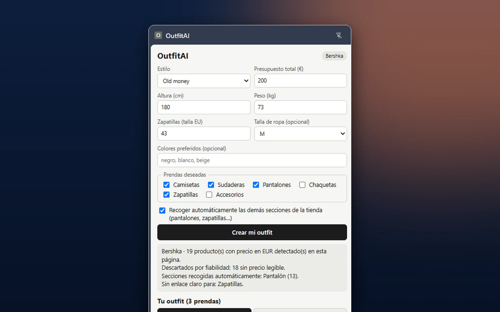

Outfit AI
Extensión de Chrome que, mientras navegas por una tienda de ropa online, combina los productos que detecta para proponerte outfits según tu estilo, tus tallas y tu presupuesto. Pensada para tiendas como Bershka.

Finalidad y estado
Qué problema aborda este proyecto y en qué punto de desarrollo se encuentra.
Finalidad
Ahorrar tiempo al combinar prendas sin pasarte del presupuesto.
Estado
Prototipo v0.5.1 · compatibilidad con cada tienda sin verificar
Funcionalidades
Lo que hace la extensión hoy.
Una prenda por categoría, con precio, talla y enlace; muestra el total y el dinero que te sobra.
El total nunca supera el presupuesto (comprobado con pruebas automáticas).
Recoge otras secciones de la tienda con tu permiso y vista previa del outfit.
Ayuda a añadir las prendas a la cesta.
Todo se calcula en local: sin servidor ni claves de API.
Captura real
Pantalla de la extensión en funcionamiento.
Capturas pendientes de añadir: el resto de pantallas de la extensión. No se muestran imágenes simuladas.
Tecnologías
Lo que he utilizado para construirla.